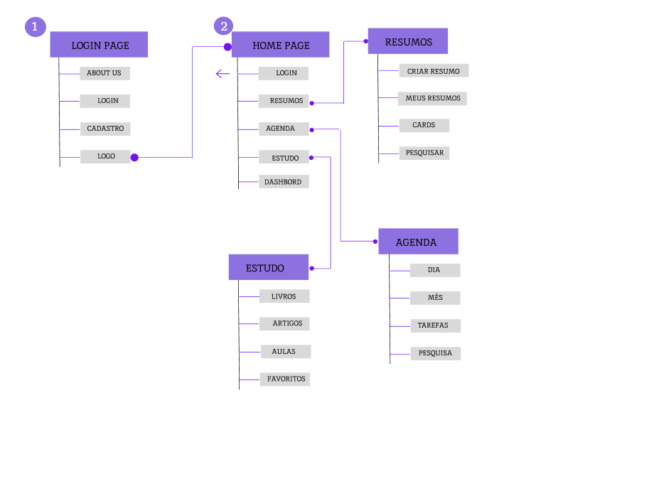
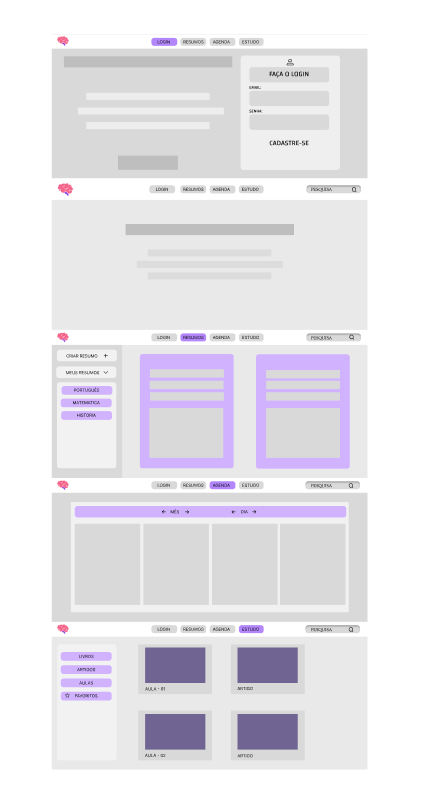
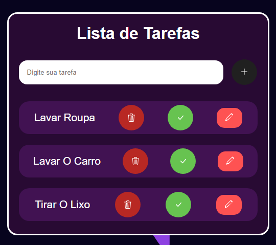
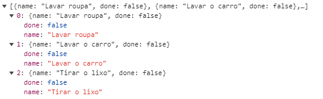
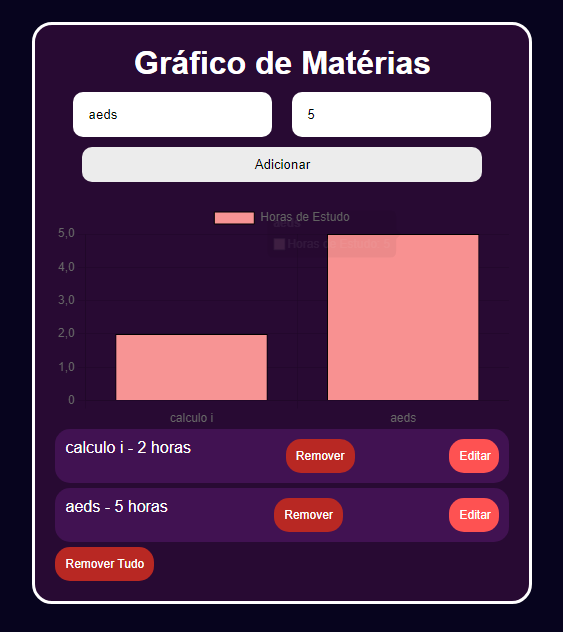
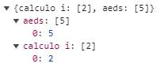
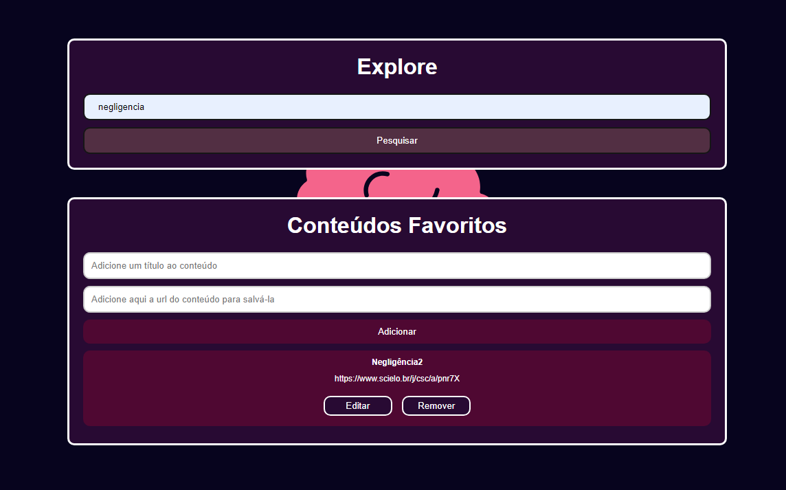
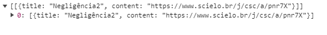
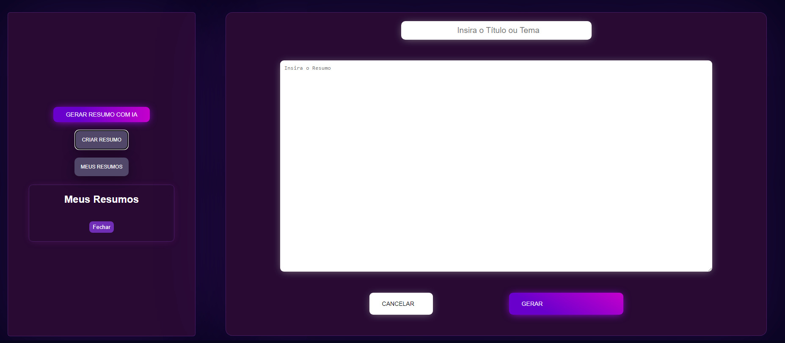

Introdução
Nome: Mindstorm
Participantes
Arlindo
Junior
Arthur Pazzutti
Joaquim Vilela
Vinicius Sena
Gabriel Lima
Informações Gerais
Contexto
Detalhes sobre o espaço de problema, justificativas e os objetivos do projeto.
Problema
Hodiernamente, é comum saber de alguem que não consegue se concentrar em tarefas e estudos, ainda mais pessoas neurodivergentes, tendo isso em vista, se faz necessário ferramentas que possam destravar e ajudar essas pessoas, para que possam ter um maior controle de suas atividades e um maior desempenho, tanto na vida como acadêmicamente.
Objetivos
Objetivo geral: Desenvolver um software para auxiliar essas pessoas, principalmente estudantes, para que possam se organizar e alcançar um maior desenvolvimento.
Justificativa
Priorizamos a inclusão de pessoas com neurodivergências em nossa plataforma educacional, adaptando-a para atender às suas necessidades específicas. Desenvolvemos funcionalidades internas que simplificam a organização e maximizam o foco no estudo. Nossa meta é criar um ambiente de aprendizado acolhedor e eficaz, capacitando esses usuários a alcançarem um maior desempenho, tanto no cotidiano como na vida acadêmica.
Público-alvo
O público-alvo do nosso projeto são indivíduos neurodivergentes de 17 à 30 anos, que apresentam, principalmente, dificuldades de organização e concentração nos estudos. Nosso principal objetivo é ajudar essas pessoas para que possam ter um maior foco e melhor desempenho.
Concepção (Design Thinking)
Detalhes do processo de discovery do projeto.
Apresente o processo de discovery do projeto. Com foco na experiência do usuário, esse processo abrange a compreensão do contexto do problema e das características do usuário, a definição do problema, a geração de ideias, a prototipagem e a elaboração de uma proposta de solução
Processo de Design Thinking
O arquivo que se segue apresenta o resultado desse processo.
Apresente o processo de Design Thinking realizado pelo grupo e documentado por meio do software Miro. No documento apresentado, devem ser incluídos: (1) a matriz CSD, (2) o mapa de stakeholders, (3) as personas, (4) as respectivas propostas de valor e (5) o processo de ideação identificando as ideias levantadas e sua priorização.
Especificações do Projeto
Documentação das especificações do projeto.
Apresente as especificações do projeto, incluindo as histórias de usuário e os requisitos funcionais e não funcionais.
Histórias de Usuários
Com base na análise das personas foram identificadas as seguintes histórias de usuários:
Apresente aqui as histórias de usuário que são relevantes para o projeto de sua solução. As Histórias de Usuário consistem em uma ferramenta poderosa para a compreensão e elicitação dos requisitos funcionais e não funcionais da sua aplicação. Se possível, agrupe as histórias de usuário por contexto, para facilitar consultas recorrentes à essa parte do documento.
EU COMO...PERSONA |
QUERO/PRECISO...FUNCIONALIDADE |
PARA...MOTIVO/VALOR |
|---|---|---|
| Pesquisadora em Ciências Sociais | Registrar minhas tarefas | acessar artigos acadêmicos sobre teorias sociológicas. |
| Estudante de Psicologia | acessar resumos sobre teorias psicológicas | que seja possível visualizar e entender melhor os conceitos complexos estudados em sala de aula. |
| Consultor de Marketing Digital | utilizar uma aba de tarefas integrada ao software | seja possível agendar reuniões com clientes e organizar meu dia de trabalho de forma eficiente. |
Requisitos
As tabelas que se seguem apresentam os requisitos funcionais e não funcionais que detalham o escopo do projeto.
Com base nas Histórias de Usuário, enumere os requisitos da sua solução. Classifique esses requisitos em dois grupos:
- Requisitos Funcionais (RF): correspondem a uma funcionalidade que deve estar presente na plataforma (ex: cadastro de usuário).
- Requisitos Não Funcionais (RNF): correspondem a uma característica técnica, seja de usabilidade, desempenho, confiabilidade, segurança ou outro (ex: suporte a dispositivos iOS e Android).
Lembre-se que cada requisito deve corresponder à uma e somente uma característica alvo da sua solução. Além disso, certifique-se de que todos os aspectos capturados nas Histórias de Usuário foram cobertos.
Requisitos Funcionais
| ID | Descrição do Requisito | Prioridade |
|---|---|---|
| RF-001 | Cadastro de usuário/login | ALTA |
| RF-002 | Permitir que o usuário cadastre tarefas diárias | ALTA |
| RF-003 | Permitir que o usuário crie seus resumos | ALTA |
| RF-004 | Permitir que o usuário procure por arquivos e consiga salva-los | ALTA |
| RF-005 | Permitir que o usuário faça logout | ALTA |
| RF-006 | Permitir que o usuário possa ter controle dos seus estudo através de gráficos | ALTA |
| RF-002 | Permitir que o usuário cadastre tarefas diárias | ALTA |
| RF-002 | Permitir que o usuário cadastre tarefas diárias | ALTA |
| RF-002 | Permitir que o usuário cadastre tarefas diárias | ALTA |
| RF-002 | Permitir que o usuário cadastre tarefas diárias | ALTA |
Requisitos Não-Funcionais
| ID | Descrição do Requisito | Prioridade |
|---|---|---|
| RNF-001 | O sistema deve ser responsivo para rodar em um dispositivos móvel | MÉDIA |
| RNF-002 | Deve processar requisições do usuário em no máximo 3s | MÉDIA |
| RNF-003 | Deve guardar suas tarefas | ALTA |
| RNF-004 | Deve guardar todos seus resumos | ALTA |
| RNF-005 | Deve guardar todos seus artigos pesquisador e favoritados | ALTA |
| RNF-006 | Deve sempre atualizar os gráficos de acordo com as matérias e horas estudadas | ALTA |
Projeto de Interface
Artefatos relacionados com a interface e a interacão do usuário na proposta de solução.
Apresente a ideia de interface que está sendo prevista para o projeto. Inclua os wireframes, o user/screen flow e o protótipo interativo.
User/Screen Flow e Protótipo interativo
Artefatos relacionados com a interface e a interacão do usuário na solução proposta.
O fluxo de usuário (User Flow) é uma técnica que permite ao desenvolvedor mapear todo fluxo de
telas do site ou app. Essa técnica funciona para alinhar os caminhos e as possíveis ações que o
usuário pode fazer junto com os membros de sua equipe. 
Um protótipo interativo apresenta o projeto de interfaces e permite ao usuário navegar pelas
funcionalidades como se estivesse lidando com o software pronto. Veja o exemplo a seguir.

Wireframes
Protótipo de telas do sistema em baixa fidelidade (rascunhos).
Os Wireframes são protótipos das telas da aplicação usados em design de interface para sugerir a
estrutura de um site web e seu relacionamentos entre suas páginas. Um wireframe web é uma ilustração
semelhante ao layout de elementos fundamentais na interface. 

https://www.figma.com/design/WKv8vkb0TP9fHMQFtJ6HkC/Untitled?node-id=0-1&t=AvCH8b90TNIjfSqZ-0
Metodologia
Nesta parte do documento, você deve apresentar a metodologia adotada pelo grupo, descrevendo o processo de trabalho baseado nas metodologias ágeis, a divisão de papéis e tarefas, as ferramentas empregadas e como foi realizada agestão de configuração do projeto via GitHub.
Coloque detalhes sobre o processo de Design Thinking e a implementação do Framework Scrum seguido pelo grupo. O grupo poderá fazer uso de ferramentas on-line para acompanhar o andamento do projeto, a execução das tarefas e o status de desenvolvimento da solução.
Ferramentas
Relação de ferramentas empregadas pelo grupo durante o projeto.
Liste as ferramentas empregadas no desenvolvimento do projeto, justificando a escolha delas, sempre que possível. Inclua itens como: (1) Editor de código, ferramentas de comunicação, ferramentas de diagramação, plataformas de hospedagem, entre outras.
| Ambiente | Plataforma | Link de Acesso |
|---|---|---|
| Processo de Design Thinking | Miro | https://miro.com/app/board/uXjVKdBaUHo=/ |
| Repositório de código | GitHub | https://github.com/ICEI-PUC-Minas-PPLES-TI/plf-es-2024-1-ti1-0385100-inclusao-de-neurodivergentes-tdah |
| Hospedagem do site | Heroku | https://XXXXXXX.herokuapp.com |
| Protótipo Interativo | Figma | https://www.figma.com/design/WKv8vkb0TP9fHMQFtJ6HkC/Untitled?node-id=0-1&t=UOSB5olpPQl3BWeB-0 |
Gestão do Projeto
Divisão de papéis no grupo e apresentação da estrutura da ferramenta de controle de tarefas (Kanban).
Apresente a divisão de papéis e tarefas entre os membros do grupo. Informe quem é o Scrum Master, o Product Owner e os desenvolvedores. Informe também quem é o responsável pela documentação do projeto.
Apresente o quadro de gerenciamento do time (Kanban), seu formato e as experiências na utilização dessa ferramenta (GitHub Projects)
A divisão de tarefas foi usada para uma conclusão mais rapida do nosso trabalho. A gestão de projetos foi destinada ao Arlindo Junior (Scrum Master), ao Arthur Pazzutti, Vincius Sena e Gabriel Lima, foram destinado o processo de Design Think. User flow e Wireframes foram feitos a partir de uma participação geral do grupo, incluindo discussões e reuniões até chegarem em um consenso geral. O Arlindo Junior ficou com o dever de passar as informações para o figma. Posterioremente, os slides foram feitos pelo Joaquim Vilela e a documentação redigida pelo Arlindo Junior. Todos os arquivos foram enviados no tempo certo para a conclusão do projeto, sendo necessárias reuniões tanto online quanto presenciais para acelerar o desenvolvimento, sendo usado o Framework Scrum para gerenciamento do projeto.
Controle de Versão
Estrutura do fluxo de trabalho no ambiente do GitHub.
Discuta como a configuração do projeto foi feita na ferramenta de versionamento (GitHub). Exponha
como a gerência de tags, merges, commits e branchs é realizada. Discuta como a gerência de issues foi
realizada.

Commits foram feitos a partir de qualquer atualização, com nomes claro e especificos sobre as mudanças, publicado diretamente na master.
Solução
Esta seção apresenta todos os detalhes da solução criada no projeto.
Apresente cada uma das funcionalidades que a aplicação fornece tanto para os usuários quanto aos administradores da solução.
Inclua, para cada funcionalidade, itens como: (1) titulos e descrição da funcionalidade; (2) Estrutura de dados associada; (3) o detalhe sobre as instruções de acesso e uso.
Video do Projeto
O vídeo a seguir traz uma apresentação do problema que a equipe está tratando e a proposta de solução.
O video de apresentação é voltado para que o público externo possa conhecer a solução. O formato é livre, sendo importante que seja apresentado o problema e a solução numa linguagem descomplicada e direta.
Utilize o recurso de compartilhamento via embed e inclua o vídeo logo abaixo.
Funcionalidades
Esta seção apresenta as funcionalidades da solução.
Apresente cada uma das funcionalidades que a aplicação fornece tanto para os usuários quanto aos administradores da solução.
Inclua, para cada funcionalidade, itens como: (1) titulos e descrição da funcionalidade; (2) Estrutura de dados associada; (3) o detalhe sobre as instruções de acesso e uso.
Funcionalidade 1 - Cadastro de tarefas
Permite a inclusão, leitura, alteração e exclusão de tarefas criadas pelo cliente
- Estrutura de dados: Tarefas
- Instruções de acesso:
- Abra o site e efetue o login
- Acesse o menu principal e escolha a opção Tarefas
- Em seguida, adicione uma tarefa

Estruturas de Dados
Descrição das estruturas de dados utilizadas na solução com exemplos no formato JSON.
Apresente as estruturas de dados utilizadas na solução tanto para dados utilizados na essência da aplicação quanto outras estruturas que foram criadas para algum tipo de configuração
Nomeie a estrutura, coloque uma descrição sucinta e apresente um exemplo em formato JSON.
Estrutura de Dados - Tarefas
Contatos da aplicação

Funcionalidade 2 - Criação de gráficos
Permite a inclusão, leitura, alteração e exclusão de matérias e horas estudadas do usuário
- Estrutura de dados: Gráfico
- Instruções de acesso:
- Abra o site e efetue o login
- Acesse o menu principal e escolha a opção Tarefas
- Em seguida, adicione uma matéria e quantas horas você estudou referente a ela

Estruturas de Dados
Descrição das estruturas de dados utilizadas na solução com exemplos no formato JSON.
Apresente as estruturas de dados utilizadas na solução tanto para dados utilizados na essência da aplicação quanto outras estruturas que foram criadas para algum tipo de configuração
Nomeie a estrutura, coloque uma descrição sucinta e apresente um exemplo em formato JSON.
Estrutura de Dados - Gráfico
Contatos da aplicação

Funcionalidade 3 - Pesquisa de artigos
Permite a pesquisa de artigos no google acadêmico
- Estrutura de dados: Pesquisa
- Instruções de acesso:
- Abra o site e efetue o login
- Acesse o menu principal e escolha a opção Estudos
- Em seguida, pesquise um tema e o site te direcionará para o google acadêmico.

Estruturas de Dados
Descrição das estruturas de dados utilizadas na solução com exemplos no formato JSON.
Apresente as estruturas de dados utilizadas na solução tanto para dados utilizados na essência da aplicação quanto outras estruturas que foram criadas para algum tipo de configuração
Nomeie a estrutura, coloque uma descrição sucinta e apresente um exemplo em formato JSON.
Estrutura de Dados - Pesquisa
Contatos da aplicação

Funcionalidade 4 - Criação de resumo
Permite a craição de resumo manual e a partir de um prompt usando chat gpt
- Estrutura de dados: Criação
- Instruções de acesso:
- Abra o site e efetue o login
- Acesse o menu principal e escolha a opção Resumos
- Em seguida, clique em gerar resumo ou criar seu resumo.

Estruturas de Dados
Foi utilizado um api do OpenAi.
Apresente as estruturas de dados utilizadas na solução tanto para dados utilizados na essência da aplicação quanto outras estruturas que foram criadas para algum tipo de configuração
Nomeie a estrutura, coloque uma descrição sucinta e apresente um exemplo em formato JSON.
Módulos e APIs
Esta seção apresenta os módulos e APIs utilizados na solução.
Apresente os módulos e APIs utilizados no desenvolvimento da solução. Inclua itens como: (1) Frameworks, bibliotecas, módulos, etc. utilizados no desenvolvimento da solução; (2) APIs utilizadas para acesso a dados, serviços, etc.
Fonts:
- Icons Font Face - https://fontawesome.com/
Scripts:
- Bootstrap 4 - http://getbootstrap.com/
APIs:
- OpenAI - https://openai.com/index/openai-api/
FAQ
Perguntas e respostas comuns associadas ao projeto.
Apresente uma lista de perguntas e respostas comuns associadas ao projeto. Inclua perguntas como: (1) detalhes de acesso e uso do projeto; (2) informações sobre a instalação e configuração da aplicação; (3) questões sobre a manutenção da aplicação; (4) detalhes sobre a integração da aplicação com outros sistemas; (5) questões sobre a segurança da aplicação.
Referências Bibliográficas
Esta seção apresenta as referências bibliográficas utilizadas no projeto.
Apresente as referências bibliográficas utilizadas no projeto. Inclua itens como: (1) livros, artigos, tutoriais, etc. utilizados no desenvolvimento da solução; (2) links para sites, blogs, etc. utilizados no desenvolvimento da solução.
- Google Acadêmico
- Youtube
- Chat GPT